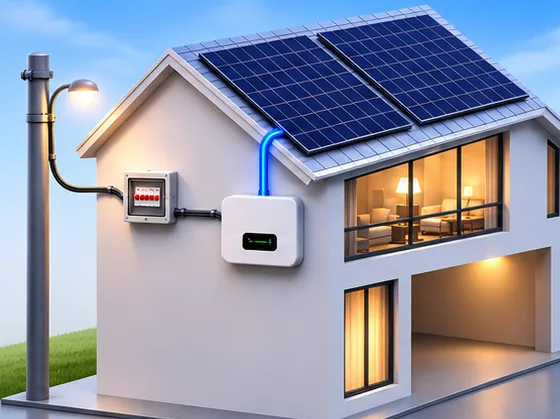
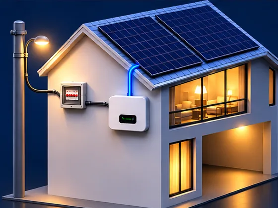

Administração
Usinas
Olá


0,00kW
Solar (placas)
0,00kW
Casa
0,00kW
Prioritárias (EPS)
0,00kW
Inversor
0%
Bateria
0,00kW
Rede
Gerando agora
⚡ Gerador ligado kW
Sem energia da rede agora
A sua casa está funcionando pela bateria. Quando a rede voltar, tudo volta ao normal sozinho.
Seu sistema parou de gerar
Já estamos sabendo: alguém da equipe GAP está verificando. Você não precisa fazer nada, avisamos aqui quando voltar.
Agendar visita técnicaWhatsApp da GAP: (31) 98510-1043Gerado hoje
0kWh
até agoraEconomia hoje
R$ 0,00
Potência agora
0kW
Geração de hoje
Geração
Gerado no mês
0kWh
Economia no mês
R$ 0
Média por dia
0kWh
Melhor dia
0kWh
Total de cada dia
Perdas do sistema no mês
0 kWhTotal gerado pela sua usina
0 kWhDia a dia
Minha conta
Seus dados
Nome
E-mail
Usinas
Avisos no celular
A GAP avisa aqui no celular quando a sua usina entrar em alarme e quando voltar a gerar.
Trocar a senha
Seus equipamentos
O inversor transforma a energia das placas e, junto com a bateria (quando tem), manda os dados pela internet a cada 15 minutos. Toque num equipamento para ver a última leitura.
Wi-Fi do inversor
Conectar inversor
Em breve
Esta parte ainda está sendo feita
Chamados de limpeza e manutenção, recibos e documentos da sua usina vão aparecer aqui. Por enquanto, fale com a GAP pelo WhatsApp (31) 98510-1043.